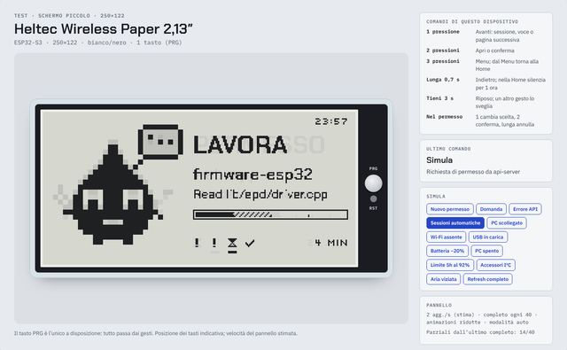
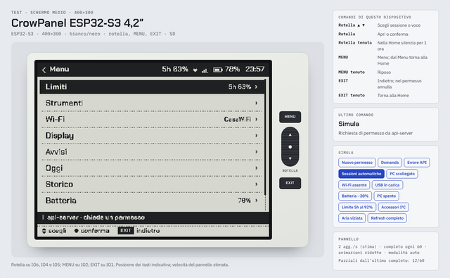
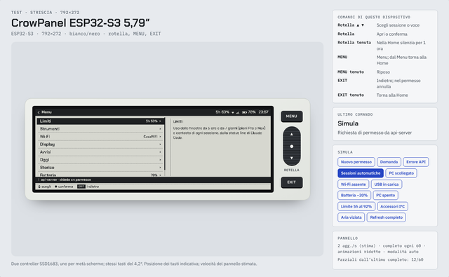
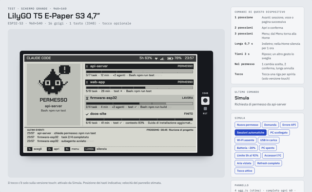
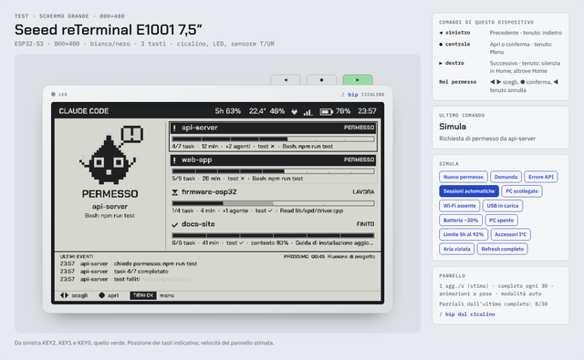

Bozza 0.2 · sistema per display e-ink · Claude Code
Calamaio OS
Il progetto di design in pagine HTML da aprire nel browser, anche senza internet. Le tavole di sistema spiegano come funziona; i banchi TEST simulano ogni dispositivo con i suoi tasti.
Sistema
TEST · un banco per ogni dispositivo

Heltec Wireless Paper 2,13″Un tasto (PRG), 250×122. LilyGO T5 V2.4 2,13″Un tasto (IO39), 250×122.
CrowPanel ESP32‑S3 4,2″Rotella, MENU, EXIT, 400×300.
CrowPanel ESP32‑S3 5,79″Rotella, MENU, EXIT, 792×272.
LilyGO T5 4,7″ S3Un tasto e tocco, 960×540, 16 grigi.
Seeed reTerminal E1001 7,5″Tre tasti, cicalino, LED, 800×480.Guida illustrata in PDFFunzioni, schermate, collegamenti e funzionamento sull’hardware reale.
Apri la guidaCom’è fatta questa cartella
Pagine
index.htmlè questa pagina.- Una pagina per tavola di sistema e una per banco TEST.
- Ogni pagina contiene il suo template in un tag
<template>.
Script
assets/dc-lite.jslegge i template: segnaposto, condizioni, liste, eventi.assets/calamaio-test.jsè il simulatore: disegno degli schermi, menu, gesti, refresh e-ink.
Senza internet
- I font sono in
assets/fonts, con le loro licenze. - Nessun server: basta il doppio clic su
index.html. - Funziona in Chrome, Edge, Firefox e Safari recenti.